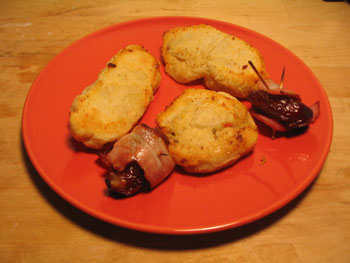

Practice hors d'oeuvre

Last night I wanted to make a few practice hors d’oeuvre for the upcoming Beaujolais nouveau fête. It was partially successful. I’d been attracted to a recipe I found in a whole grain book several weeks ago, but FreshDirect kept giving me the shaft on a few key ingredients. I finally got everything together yesterday, so I made gingered lamb and quinoa rolled in puff pastry. Now, my version looked nothing like the picture, because I stupidly thought that FD’s puff pastry dough would be in sheets rather than a block, and I don’t have a rolling pin. Nevertheless, it was delicious. I also made a recipe that Ruth Reichl wrote about last month, parmesan-stuffed dates wrapped in bacon (that’s the sausage looking thing above). They were incredibly easy to make, but I can’t tolerate the sweetness of dates, even with salty cheese inside and smoky bacon outside. I ate one and made n8 eat the other three.
Quinoa, in case you were wondering, is delicious. It’s an ancient South American staple, revered by the Incas, and it’s one of the most nutritious things you can eat. Sadly, when the Spanish destroyed Incan civilization, they forbade the cultivation of quinoa, and even today, some Peruvians won’t eat it because of its reputation as a peasant food. It’s easy to cook, eat, and digest, and I intend to use it in place of rice as often as I can afford to.
Comments
that’s what i was afraid of too (re: the dates)
It’s weird, they tasted like sugar had been added. Maybe baking them does that. :\ Anyway I still liked it and think it would be great if the bacon were saltier.
Maybe I could put some Maldon sea salt on them, or just come up with something else. Anyway, now I have a bunch damn dates sitting around.
yummy. can’t wait!! and whenever you don’t have a rolling pin, a wine bottle wrapped in plastic wrap works really well!
Add a comment